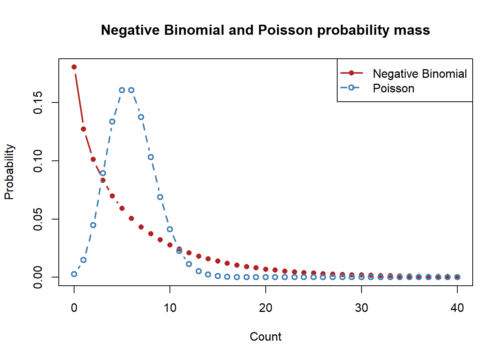
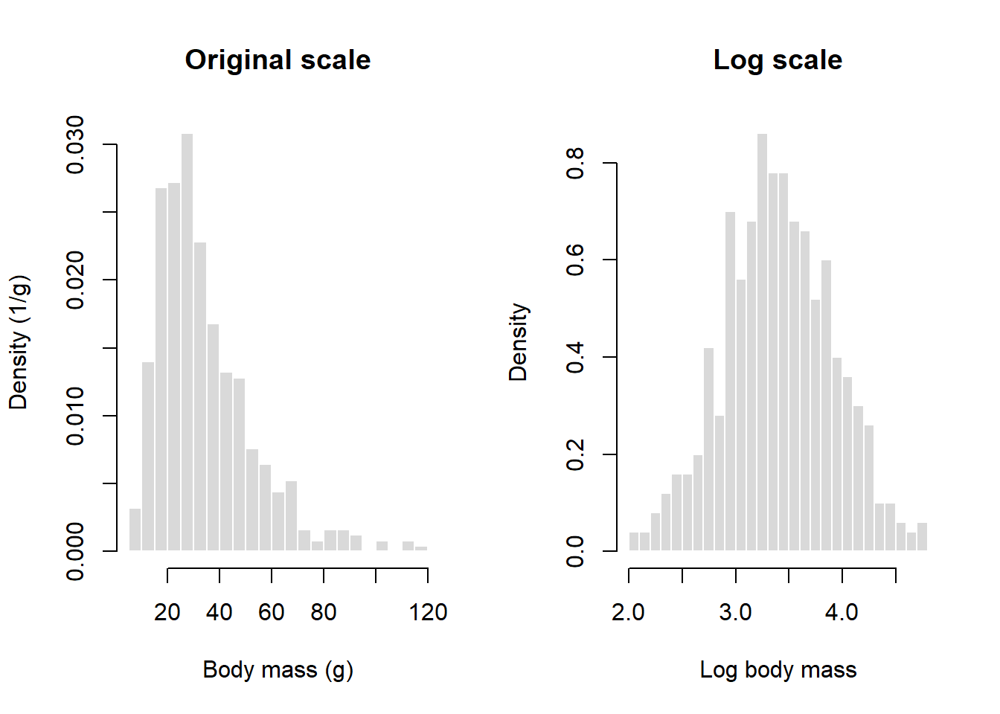
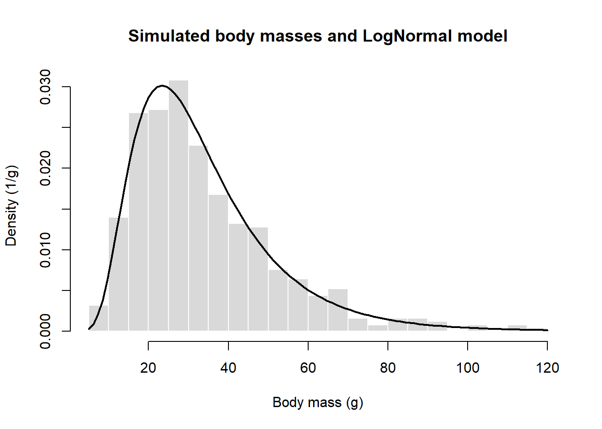
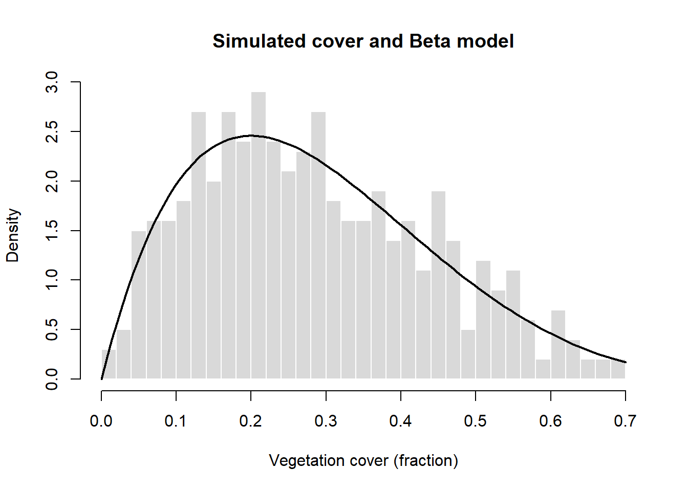

# Load RTMB first and RTMBdist second.
library(RTMB)
library(RTMBdist)Probability distributions - Solutions
The fully worked Exercises 1 and 2 are on the student practical page. These solutions follow the same assumed models, tasks, and seeds as Exercises 3–6 on that page.
The distribution functions come from the packages RTMB and RTMBdist, which provide the distribution functions used in the whole course, including some that base R lacks. Chapter 4 explains what else they do. Load them once, RTMB first:
1 Exercise 3: Checking for overdispersion
We are going to use a built-in dataset in R on counts of tobacco hornworm, in agricultural experimental units treated with six different insecticides. We can load the data as follows:
data(InsectSprays, package = "datasets")Calculate the mean and variance for
count. Is there evidence of overdispersion?Repeat the same calculations but now do it separately for each
spraytreatment (tip: use the tools for data transformation we learnt in Chapter 1). Is there still evidence of overdispersion?Which model would you use for
countwhen ignoring thespraytreatment and which model would you try when doing it separately for eachspraytreatment?
1.1 Solution
1.1.1 Question 1
Load the data and compare the sample variance with the mean. For a Poisson distribution, the mean and variance are equal, so a variance much larger than the mean suggests overdispersion.
data(InsectSprays, package = "datasets")
pooled_mean = mean(InsectSprays$count)
pooled_variance = var(InsectSprays$count)
c(
mean = pooled_mean,
variance = pooled_variance,
dispersion_ratio = pooled_variance / pooled_mean
) mean variance dispersion_ratio
9.500000 51.887324 5.461824 The mean is about 9.5, the variance is 51.9, and the variance-to-mean ratio is 5.5. This is substantial overdispersion when the treatments are pooled.
1.1.2 Question 2
Now calculate the summaries separately for each spray treatment:
library(dplyr)
spray_groups = group_by(InsectSprays, spray)
spray_summary = summarise(
spray_groups,
n = n(),
mean = mean(count),
variance = var(count),
dispersion_ratio = variance / mean,
.groups = "drop"
)
spray_summary# A tibble: 6 × 5
spray n mean variance dispersion_ratio
<fct> <int> <dbl> <dbl> <dbl>
1 A 12 14.5 22.3 1.54
2 B 12 15.3 18.2 1.19
3 C 12 2.08 3.90 1.87
4 D 12 4.92 6.27 1.27
5 E 12 3.5 3 0.857
6 F 12 16.7 38.6 2.32 Five of the six treatments have a variance-to-mean ratio greater than one, though the amount of overdispersion is much smaller than when pooled. Notice how a big part of the overdispersion could be explained by the fact that we were looking at different treatments pooled together.
1.1.3 Question 3
Ignoring spray, a Negative Binomial model is a reasonable choice because the pooled counts are strongly overdispersed. When accounting for spray, a Poisson model with spray as a predictor is a useful starting point, though we might still end up using a Negative Binomial (we will cover formal methods of model comparison later in the book).
2 Exercise 4: Overdispersed quadrat counts
Let’s assume a Negative Binomial distribution with a mean (\(\mu = 6\)) and shape parameter (\(k = 0.8\)). The formulae and R functions are in the Negative Binomial entry of the supplement.
- Calculate the mean and variance of the model using the formulas. Then verify them using
dnbinom2()and weighted sums. - Generate a sample of size 500.
- Calculate the mean and variance of this sample in R.
- Compare the Negative Binomial distribution with a Poisson distribution having the same mean. How do they differ? What is the variance/mean ratio of the sample? Plot their probability mass functions.
2.1 Solution
2.1.1 Question 1
For a Negative Binomial distribution with \(\mu=6\) and \(k=0.8\),
\[ E[X]=\mu=6 \]
and
\[ \operatorname{Var}(X) = \mu+\frac{\mu^2}{k} = 6+\frac{6^2}{0.8} = 51. \]
We can verify these values using the probability mass function and weighted sums. The distribution’s support is infinite; using values from 0 to 1,000 makes the omitted tail negligible.
mu = 6
k = 0.8
x_theory = 0:1000
probability = dnbinom2(x_theory, mu = mu, size = k)
c(
probability_sum = sum(probability),
weighted_mean = sum(x_theory * probability),
weighted_variance = sum((x_theory - mu)^2 * probability)
) probability_sum weighted_mean weighted_variance
1 6 51 2.1.2 Question 2
Generate a sample of size 500:
set.seed(123)
sample_counts = rnbinom2(
n = 500,
mu = mu,
size = k
)2.1.3 Question 3
Calculate the mean and the empirical variance of the sample. The empirical variance uses the divisor \(n\), as in the empirical distribution.
sample_mean = mean(sample_counts)
sample_variance = mean((sample_counts - sample_mean)^2)
c(
mean = sample_mean,
empirical_variance = sample_variance,
variance_mean_ratio = sample_variance / sample_mean,
variance_using_var = var(sample_counts)
) mean empirical_variance variance_mean_ratio variance_using_var
5.826000 54.975724 9.436273 55.085896 The sample summaries vary between simulations, but should be broadly consistent with a mean of 6 and a variance of 51. The variance-to-mean ratio of the model is \(51/6=8.5\); the sample ratio will not necessarily equal it.
2.1.4 Question 4
A Poisson distribution with the same mean has variance 6, while the Negative Binomial has variance 51. The Negative Binomial therefore has more probability near zero and in the upper tail.
x = 0:40
negative_binomial_mass = dnbinom2(x, mu = mu, size = k)
poisson_mass = dpois(x, lambda = mu)
matplot(
x,
cbind(negative_binomial_mass, poisson_mass),
type = "b",
pch = c(16, 1),
lty = c(1, 2),
lwd = 2,
col = c("firebrick", "steelblue"),
xlab = "Count",
ylab = "Probability",
main = "Negative Binomial and Poisson probability mass"
)
legend(
"topright",
legend = c("Negative Binomial", "Poisson"),
col = c("firebrick", "steelblue"),
pch = c(16, 1),
lty = c(1, 2),
lwd = 2
)
3 Exercise 5: Body mass under a LogNormal model
Suppose body mass \(X\) in grams follows a LogNormal model with meanlog = log(30) and sdlog = 0.5. These two parameters are the mean and the standard deviation of the logarithm of body mass. The formulae for the median and the mean are in the LogNormal entry of the supplement.
- Calculate the median and the mean body mass of the model. Explain why they differ.
- Calculate the probability that body mass exceeds 50 g and the 95th percentile.
- Simulate 500 body masses with seed 202. Make density-scaled histograms on the original and log scales. Describe their shapes.
- Add the LogNormal density of the model to the original-scale histogram. Explain what the comparison can and cannot tell you about field data.
3.1 Solution
3.1.1 Question 1
The parameters of the LogNormal distribution describe \(\log(X)\): meanlog is its mean, \(\mu\), and sdlog is its standard deviation, \(\sigma\). On the original scale, the median and the mean of body mass are
\[ \operatorname{median}(X)=e^{\mu} \]
and
\[ E[X]=e^{\mu+\sigma^2/2}. \]
In R:
# Parameters of the model on the log scale
mass_meanlog = log(30)
mass_sdlog = 0.5
# Median and mean of body mass on the original scale (in grams)
median_mass = exp(mass_meanlog)
mean_mass = exp(mass_meanlog + mass_sdlog^2 / 2)
c(median_g = median_mass, mean_g = mean_mass)median_g mean_g
30.00000 33.99445 The median is 30 g and the mean is approximately 34 g. They differ because the distribution is skewed to the right: the large body masses in the upper tail pull the mean above the median.
3.1.2 Question 2
plnorm() calculates the cumulative probability \(P(X\leq x)\). For a body mass above 50 g we need the upper tail, which we obtain with lower.tail = FALSE. qlnorm() calculates the mass below which 95% of the probability of the model falls.
# Probability of a body mass above 50 g (upper tail)
prob_over_50 = plnorm(
q = 50, meanlog = mass_meanlog, sdlog = mass_sdlog,
lower.tail = FALSE
)
# Body mass at a cumulative probability of 0.95
mass_95 = qlnorm(p = 0.95, meanlog = mass_meanlog, sdlog = mass_sdlog)
c(prob_over_50 = prob_over_50, percentile_95_g = mass_95) prob_over_50 percentile_95_g
0.153473 68.280498 The probability that body mass exceeds 50 g is approximately 0.15, and the 95th percentile is approximately 68.3 g. That is, under this model about 15% of the animals are heavier than 50 g and 5% are heavier than 68.3 g.
3.1.3 Question 3
Generate the sample and plot a histogram of the body masses and a histogram of their logarithms. Both use density scaling (probability = TRUE):
# Simulate 500 body masses (in grams) with the seed given in the exercise
set.seed(seed = 202)
body_mass = rlnorm(n = 500, meanlog = mass_meanlog, sdlog = mass_sdlog)
# Draw the two histograms side by side and restore the graphics settings afterwards
old_par = par(no.readonly = TRUE)
par(mfrow = c(1, 2))
hist(
x = body_mass, breaks = 25, probability = TRUE,
col = "grey85", border = "white",
xlab = "Body mass (g)", ylab = "Density (1/g)",
main = "Original scale"
)
hist(
x = log(body_mass), breaks = 25, probability = TRUE,
col = "grey85", border = "white",
xlab = "Log body mass", ylab = "Density",
main = "Log scale"
)
par(old_par)On the original scale the body masses are all positive and skewed to the right, with a few animals much heavier than the rest. Their logarithms are approximately symmetric, because the logarithm of a LogNormal random variable follows a Normal distribution.
3.1.4 Question 4
Plot the original-scale histogram again and add the density of the model with curve():
hist(
x = body_mass, breaks = 25, probability = TRUE,
col = "grey85", border = "white",
xlab = "Body mass (g)", ylab = "Density (1/g)",
main = "Simulated body masses and LogNormal model"
)
# Add the density of the model that generated the sample
curve(
dlnorm(x = x, meanlog = mass_meanlog, sdlog = mass_sdlog),
add = TRUE, lwd = 2
)
The histogram follows the curve but does not match it exactly. Since the sample was generated from this model, the differences show how much a histogram of 500 values varies around the density of its model. To learn whether a LogNormal model describes body masses measured in the field, we would have to compare the model with those measurements.
4 Exercise 6: Vegetation cover under a Beta model
Suppose \(X\) is the fraction of a quadrat covered by vegetation, measured as a continuous variable, and that \(X\) follows a Beta model with \(a=2\) and \(b=5\). In R these parameters are shape1 and shape2. The formulae for the mean and the variance are in the Beta entry of the supplement.
- Calculate the mean and the variance of the model. Express the mean as a percentage of the quadrat.
- Calculate \(P(X<0.20)\) and the 95th percentile of cover. Explain both results.
- Simulate 500 cover fractions with seed 303. Plot a density-scaled histogram and add the Beta density of the model.
- A field survey also records some quadrats with exactly zero cover. Explain why the proposed Beta model cannot describe those observations directly.
4.1 Solution
4.1.1 Question 1
For a Beta distribution with shape parameters \(a=2\) and \(b=5\),
\[ E[X]=\frac{a}{a+b}=\frac{2}{7}\approx 0.286 \]
and
\[ \operatorname{Var}(X) = \frac{ab}{(a+b)^2(a+b+1)} = \frac{10}{392} \approx 0.026. \]
In R:
# Shape parameters of the Beta model
cover_a = 2
cover_b = 5
# Mean and variance of the cover fraction
mean_cover = cover_a / (cover_a + cover_b)
variance_cover = cover_a * cover_b /
((cover_a + cover_b)^2 * (cover_a + cover_b + 1))
c(mean_fraction = mean_cover,
mean_percent = 100 * mean_cover,
variance = variance_cover)mean_fraction mean_percent variance
0.2857143 28.5714286 0.0255102 The expected cover is approximately 0.286, or 28.6% of a quadrat. The variance is approximately 0.026 and, like the cover fraction, it has no units.
4.1.2 Question 2
pbeta() calculates the cumulative probability and qbeta() the quantile:
# Probability of a cover fraction below 0.20
prob_below_20_percent = pbeta(
q = 0.20, shape1 = cover_a, shape2 = cover_b
)
# Cover fraction at a cumulative probability of 0.95
cover_95 = qbeta(p = 0.95, shape1 = cover_a, shape2 = cover_b)
c(prob_below_20_percent = prob_below_20_percent,
percentile_95_fraction = cover_95) prob_below_20_percent percentile_95_fraction
0.3446400 0.5818034 The first result is the probability that a quadrat has less than 20% cover, which is approximately 0.34. The second is the cover fraction below which 95% of the quadrats fall under this model, approximately 0.58 (58% cover). Note that using \(<\) or \(\leq\) at 0.20 gives the same probability, because cover is a continuous random variable.
4.1.3 Question 3
# Simulate 500 cover fractions with the seed given in the exercise
set.seed(seed = 303)
cover_fraction = rbeta(n = 500, shape1 = cover_a, shape2 = cover_b)
# Histogram on the density scale so that it is comparable to the curve
hist(
x = cover_fraction, breaks = 25, probability = TRUE,
col = "grey85", border = "white",
xlab = "Vegetation cover (fraction)", ylab = "Density",
main = "Simulated cover and Beta model"
)
# Add the density of the model that generated the sample
curve(
dbeta(x = x, shape1 = cover_a, shape2 = cover_b),
add = TRUE, lwd = 2
)
The histogram shows one simulated sample, so its bars follow the density of the model without matching it exactly.
4.1.4 Question 4
The Beta distribution is continuous, so it assigns zero probability to any exact value, including a cover of exactly zero or exactly one. A sample from this model will therefore never contain a quadrat with zero cover, however large the sample is. Before modelling field observations at those boundaries, we would ask whether they represent quadrats that are really bare (or fully covered) and how they arose, and then extend the model to account for them (see the section on zero-inflated distributions in the supplement).